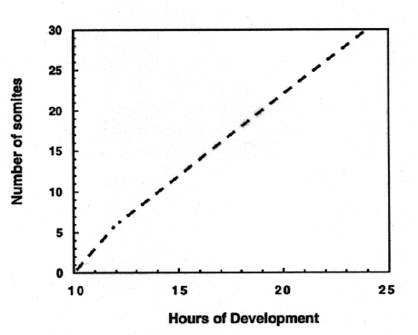

Modified from: Kimmel et al., 1955. Developmental Dynamics 203:253-310. Copyright © 1995 Wiley-Liss, Inc. Reprinted only by permission of Wiley-Liss, a subsidiary of John Wiley & Sons, Inc.
Fig. 18. Idealized rate of somitogenesis (at 28.5C; from the data of Hanneman and Westerfield, 1989). It is useful to remember that there are 18 somites at 18 h, and the usual increase is two per hour. However, at first (between 10 and 12 h) three somites form per hour. Count only the number of fully-formed somites to obtain the total.

Figure 18